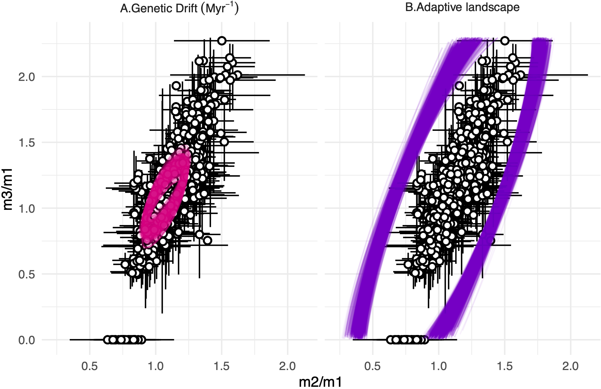
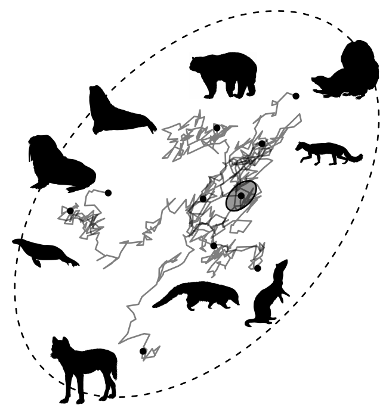
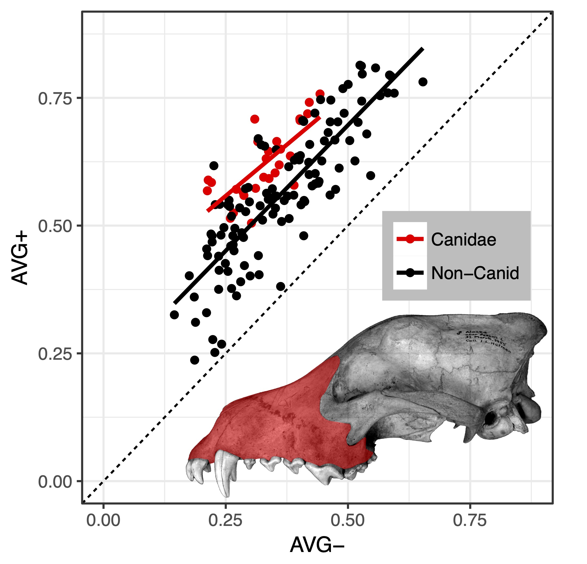

The study of evolution has been classically divided into two fields: micro and macroevolution. While microevolution is concerned with evolutionary change that takes place within ecological and historical periods, macroevolution is the study of changes that happened throughout millions of years, at the paleontological time-scale. Classically, these fields have been seem as somehow irreconsilable, as the models describing short-period changes cannot account for the complexities over longer periods of time. Results from our lab, however, show that the macroevolution of some biological systems follow very closely the predictions of microevolutionary models, opening the door for the incorporation of more biologically realistic assumptions in the study of macroevolution and paleontology.
EVOLUTION OF THE MAMMALIAN SKULL

The vertebrate skull is a complex system containing multiple individualized units (bones) formed along ontogeny by a complex interaction of numerous biological processes. The skull also has many organs and structures that perform various functions, such as perception, cognition, food processing and etc, making it a target of intense, and sometimes conflicting, selective pressures. We use the mammalian skull as a model to understand how selection can shape a complex structure. We integrate phylogenetic comparative methods, quantitative genetics theory and ecological information to investigate how the skull evolves and what internal and external factors might shape its diversification.
MORPHOLOGICAL INTEGRATION

Variation is the fuel of evolution. Understanding how variation is generated and structured in complex traits can provide critical insights into species' capacity to adapt over time. Biological traits can also covary to different degrees, leading to patterns of variational modularity and integration, which can constraint or facilitate evolution. We employ high-dimensional morphometric techniques to describe patterns of trait variation within single species, but more importantly, compare multiple species to evaluate how these patterns are themselves evolving.
METHOD DEVELOPMENT
We develop and implement methods to analyze morphological variation and evolution at various scales. We are currently developing methods for the microevolutionary analysis of complex traits and implementing new methods for studying multivariate macroevolution and modularity. Check our software section for more information.
TAXONOMY AND SYSTEMATICS
The basic unit of macroevolutionary studies is the species. Despite many centuries of documentation, we still know only a fraction of all species that exist. Recent studies have shown that even the diversity of large charismatic mammals can be underestimated. Our work focuses on describing new species from an integrative perspective, both molecular and morphological.